Beim Anlegen eines neuen Werkzeugs steht Ihnen eine Auswahl von Werkzeugtypen zur Verfügung. Der Werkzeugtyp bestimmt, welche Geometrieangaben erforderlich sind und wie diese verrechnet werden.
Sie wechseln in der vertikalen Softkeyleiste zwischen den folgenden Werkzeuggruppen:
-
Favoriten
-
Fräser
-
Bohrer
-
Sonderwerkzeug
Werkzeugtypen
Folgende Werkzeuge werden im Fenster "Neues Werkzeug - Favoriten" angeboten:
Typ | Bezeichner | Werkzeuglage |
|---|
120 | Schaftfräser | 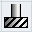 |
140 | Planfräser | |
200 | Spiralbohrer | 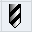 |
220 | Zentrierer | 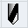 |
240 | Gewindebohrer | 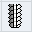 |
710 | 3D-Messtaster | 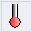 |
711 | Kantentaster | 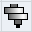 |
110 | Kugelkopf zylindrisch | 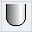 |
111 | Kugelkopf kegelig | 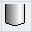 |
121 | Schaftfräser Eckenverr. | 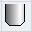 |
155 | Kegelstumpffräser | 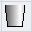 |
156 | Kegelstumpffräs. Eck. | 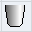 |
157 | Kegeliger Gelenkfräser | 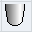 |
Folgende Werkzeuge werden im Fenster "Neues Werkzeug - Fräser" angeboten:
Typ | Bezeichner | Werkzeuglage |
|---|
100 | Fräswerkzeug | |
110 | Kugelkopf zylindrisch | |
111 | Kugelkopf kegelig | |
120 | Schaftfräser | |
121 | Schaftfräser Eckenverr. | |
130 | Winkelkopffräser | 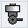 |
131 | Winkelkopf Eckenverr. | 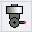 |
140 | Planfräser | |
145 | Gewindefräser | 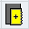 |
150 | Scheibenfräser | 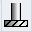 |
151 | Säge | |
155 | Kegelstumpffräser | |
156 | Kegelstumpffräs. Eck. | |
157 | Kegeliger Gelenkfräser | |
160 | Bohrgewindefräser | 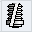 |
Folgende Werkzeuge werden im Fenster "Neues Werkzeug - Bohrer" angeboten:
Typ | Bezeichner | Werkzeuglage |
|---|
200 | Spiralbohrer | |
205 | Vollbohrer | 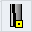 |
210 | Bohrstange | 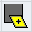 |
220 | Zentrierer | |
230 | Spitzsenker | 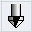 |
231 | Flachsenker | 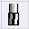 |
240 | Gewindebohrer | |
241 | Gew.Bohrer Feingewinde | |
242 | Gew.Bohrer Whitworth | |
250 | Reibahle | 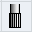 |
Folgende Werkzeuge werden im Fenster "Neues Werkzeug - Sonderwerkzeuge" angeboten:
Typ | Bezeichner | Werkzeuglage |
|---|
700 | Nutsäge | 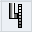 |
710 | 3D-Messtaster | |
711 | Kantentaster | |
712 | Monotaster | 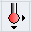 |
713 | L-Taster | 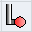 |
714 | Sterntaster | 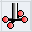 |
725 | Kalibrierwerkzeug | 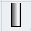 |
730 | Anschlag | |
900 | Hilfswerkzeuge | |